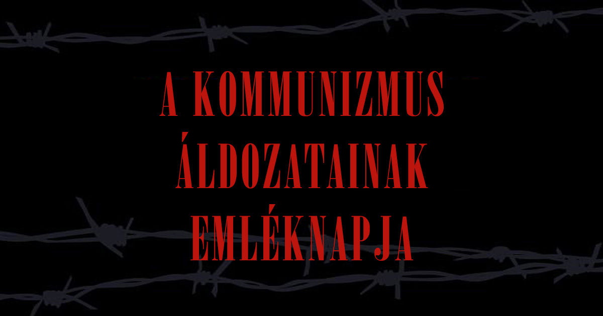

megtartását a Magyar Köztársaság Országgyűlésének 2000. június 13-án elfogadott 58/2000. (VI. 16.) sz. határozata rendelte el. Ennek értelmében a középfokú oktatási intézményekben minden év február 25-én tartják a kommunizmus áldozatainak emléknapját.
Kovács Bélát, a Független Kisgazdapárt (FKGP) főtitkárát 1947-ben ezen a napon a kommunistákkal szembeni kiállása miatt a szovjet hatóságok letartóztatták és a Szovjetunióba vitték, ahol nyolc évet töltött fogságban, először a Gulagon, majd 1951. szeptember 25-től az Állambiztonsági Minisztérium moszkvai központi börtönében.
A politikus letartóztatása és fogvatartása az első lépés volt azon az úton, amelynek során a kommunista párt kiiktatta az ellenszegülőket és így haladt a totális egypárti diktatúra kiépítése felé. Az eset ezzel a demokrácia és a szabadságjogok semmibe vételének jelképévé vált, amely a kommunizmus közel 50 éves uralmát jellemezte. Kovács Béla típuspéldája lett a pártállami rezsim áldozataiként számon tartott embereknek.
A kommunizmus fekete könyve becslések és levéltári kutatások alapján körülbelül 100 millióra teszi a kommunizmus áldozatainak számát az egész világon. Kelet-Közép-Európában az éhínségben, kényszermunkatáborban vagy kivégzés által elhunyt áldozatok száma eléri az egymilliót, de a rendszer áldozata az is, akit börtönbe zártak, vallattak, kínoztak, megbélyegeztek, akit csoport- vagy vallási hovatartozása miatt üldöztek, vagyis mindenki, akit a szabad cselekvés és választás lehetőségétől megfosztottak, testileg és lelkileg megnyomorítottak.
